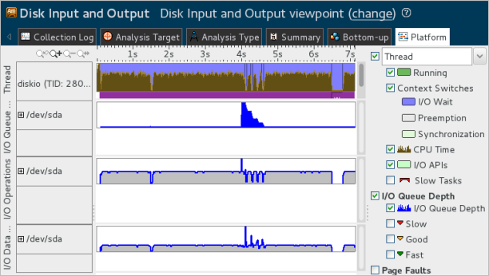

You identified that
in the mixed system file cache and user buffer mode the application runs faster
and takes much less CPU Time but creates a big I/O queue and locates all I/O
waits at the end of the application execution. To investigate further
optimization options, run the
diskio application in the user buffer mode.
You identified that
in the mixed system file cache and user buffer mode the application runs faster
and takes much less CPU Time but creates a big I/O queue and locates all I/O
waits at the end of the application execution. To investigate further
optimization options, run the
diskio application in the user buffer mode.
Configure a new data collection for the existing diskio project as follows:
Click the Configure Project button on the toolbar.
The Choose Target and Analysis Type window opens with the Analysis Target tab active.
In the Application parameters field, specify -f out.txt -m s, where s is the synchronous user buffer mode.

In this mode the diskio application will write records (16 Byte) into the user buffer (1024 records) and then writes the buffer directly to the I/O device without relying on the system file cache.
Click the Choose Analysis button on the right.
The Analysis Type tab opens. The Disk Input and Output analysis is pre-selected.
Click the Start button on the right.
VTune Amplifier collects data and opens the result in the Disk Input and Output viewpoint with the Summary window active by default. The metrics summary shows that the application Elapsed time and I/O Wait Time have reduced slightly in comparison with the combined system cache and user buffer mode:

Switch to the Platform window to view the changes in the metrics distribution on the timeline:

The CPU Time values for the diskio thread in the Thread area are not high, which means that putting data into the buffer does not take much time. I/O queue depth is equal to 1 and the I/O device is loaded evenly since the data is written to the disk directly. You may select an area on the timeline and use the context menu options to zoom in and view parallel I/O Waits and user API tasks:

I/O Waits distributed all over the application execution time clearly indicate that the main issue now is waiting for the IO operations submitted directly to the I/O device. Explore whether using two buffers and submitting the data asynchronously to the disk can help get rid of I/O Waits on the user thread.
Recap
You ran the Disk Input and Output analysis for the sample application in the synchronous user buffer mode and identified that though in this mode the Elapsed Time and I/O Wait time have decreased a little and the I/O queue is low, there are still I/O Waits on the user thread that could be avoided.